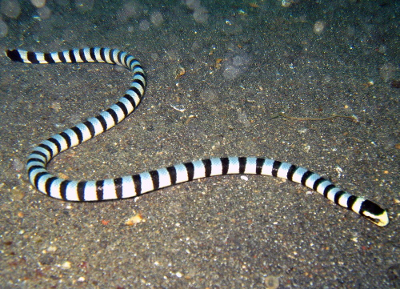

©2022 Reptilfacts tous droits réservés. Complètement libre

Image de gauche et droite : prise sur le site Wikipédia
En voyant ces images, la première chose que vous vous dites, c'est cet animal
est un serpent. Mais c'est là le piège, l'orvet n'est pas un serpent malgré
son apparence, il s'agit bien d'un lézard, car ce reptile possède des paupières,
ce que sont dépourvus les serpents.
Pourquoi je vous parle de ça ?
Ayant une aire de répartition sur quasiment tout l'Europe, l'orvet
est malheureusement souvent confondu avec des serpents et tué à tort.
C'est donc pour cela, que j'avais envie de parler de ce lézard sans pattes.
Mon avis :
Avoir un lézard de ce genre serait intéressant et sympathique à élever,
puisque vivant sur notre territoire, il n'y a pas de condition particulière
à appliquer pour lui; cependant, le souci majeur est que cette espèce fait
partie de la faune française non-domestique, donc protéger et illégale de maintenir.
Le scinque des îles Salomon est un lézard qui a la particularité de garder
et protéger son enfant pendant une période d'1 ou 2 ans. C'est une chose peu
courante chez la plupart des reptiles.
Image prise par Victor76 sur le forum « Les Dragons d'Asgard »
Pourquoi je vous parle de ça ?
Je trouve ça touchant et amusant qu'un animal un sang-froid protège et garde
son bébé.
Mon avis :
Avoir un animal de ce genre chez moi me déplairait pas, j'aime beaucoup
le comportement arboricole de ce lézard, notamment sa queue préhensile
qui lui permet de s'accrocher à des supports, d'ailleurs le nom anglais de ce
lézard est "Monkey tail skink", je trouve ça amusant de comparé sa queue à celui
d'un singe. Le défaut de cet animal est son prix mais, sa disponibilité notamment
due au fait que cette espèce est gravement en voie d'extinction dans la nature.
Le crocodile marin du haut de ces 3 mètres est l'animal qui a la plus grande
force de morsure du règne animal actuel, en effet celui-ci peut exercer une force
de 2040kg/cm² ! En comparaison, celui de l'Homme est seulement de 66kg/cm².
Photo de Toursim NT trouvé sur la page Wikipédia dédiée au crocodile
Pourquoi je vous parle de ça ?
Je trouve ça juste incroyable qu'un animal pareil peut exercer une force aussi
grande. Bien entendue, il existait à d'autres époques lointaines où des animaux
plus grands tels avaient sans doute une force de morsure supérieure à ce crocodile.
Mais aujourd'hui c'est lui qui détient ce record !
Tiens, restons un peu dans le milieu marin avec les serpents de mer.
Saviez-vous que les serpents marins ne peuvent pas boire l'eau de la mer !
Du coup aussi étrange que cela peut paraître, ces serpents doivent donc
attendre les retombés d'eau pour boire et donc attendre des mois sans
eau potable !

Photo de Jens Peterson prise sur la page du site Wikipédia dédiée
Pourquoi je vous parle de ça ?
Je pense que beaucoup de personnes parmi nous et moi le premier
pensions que les serpents de mer pouvait survivre sans eau douce.
C'est donc pour cela que j'ai trouvé instructif de placé cette anecdote ici.